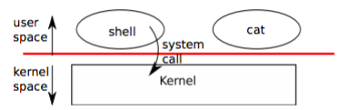
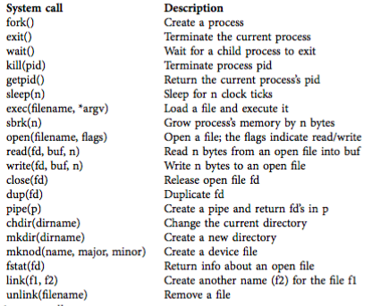
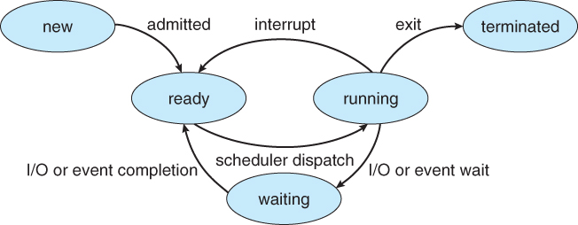

Ch0 - Operating system interfaces 簡介 page 7提供一個使用者能夠透過 OS 使用硬體的操作介面，亦即是透過在使用者空間的一支程式(user program)，叫作 shell，下 system call 指令，使用 OS Kernel 調用硬體資源。
介面設計上模仿 Unix 的OS
 圖一、介面設計
 圖二、xv6 的 system call 整理
圖二按照功能分別簡介 xv6 的各項功能，清楚易懂 Ch1 - The first process 簡介 page 17
透過呼叫 userinit()，便能夠創造一個 process。
它會先呼叫 allocproc ，配置一個 struct proc，並且將它初始化。 接下來新process 的 kernel thread 會在 forkret 上執行，再到 trapret
這個過程都在 allocproc() 中定義得很清楚 Processes and memory與 Ch1 有相關，因此從Ch0 移動到此
process | 1. 一個 process 相當於一支程式，process可以拆成數個thread，而 thread 才是實際在 CPU 核心上運行的程序。
2. 可以透過 fork() 這個 system call 將 process 進行複製，它會回傳 parent 與 child 的pid - 在 parent，它會回傳 child 的pid
- 在 child，它會回傳 0 (zero)
| memory | process 不執行的時候， xv6 會儲存 CPU 暫存器的資訊 |
xv6 以資料結構 struct proc 來保存 process 的狀態，也會為每個 process 保存不同的page table，因此可以合理地定義 process 的位址空間( address space )，這邊的位址空間概念 與計算機組織中的概念一樣。
p->state 則是紀錄了 process 的狀態，分成 allocated, ready to run, running, waiting for I/O, or exiting 數種狀態。
關於實作的部份，整理如下: 實作分析Proccess 實作整理
概念 | 程式碼實作 | 說明 | 配置第一個 user process | proc.c 的 userinit() | void userinit(void){ struct proc *p; … p = allocproc(); …. }
userinit() 中會透過 allocproc()，在 process 的紀錄表中找到一個 UNUSED 的位置，在該位置配置(allocate)一個 proc 結構 |
| proc.c 的 allocproc() | static struct proc* allocproc(void){ … found: p->state = EMBRYO; p->pid = nextpid++; … //配置 kernel stack
//在forkret配置新 context並開始執行 //同時回傳給trapret() }
將 process 的狀態從 UNUSED 改成EMBRYO，同時pid數量+1，完成基本配置。 接下來再配置process該有的 context。
初始化完畢之後， process 的狀態才改成 RUNNABLE。 |
Ch4 - Schedulingpage 61 CPU SchedulerScheduler 負責排程的工作。被稱為 Short - Term Scheduler，排工作非常頻繁 job Scheduler被稱為 Long - Term Scheduler，一個 process 只會被 job Scheduler 排進來一次 Preemptive vs Non-repreemptive 圖、Process 狀態圖
preemptive 指得是可以被中斷的程序，反之 Non-preemptive 則是不能被中斷執行。 CPU scheduling 發生的時機整理 | 說明 | preemptive | Non-preemptive | running -> waiting state | Timer 啟動作用，時間到就把執行的程序趕出去 | V | V | running -> ready state | 這個程序很重要，接續排在執行的排程中 | V |
| waiting -> ready state | 與 running -> ready state | V |
| Terminates | 程序結束，當然就可以中斷它 | V | V |
| 優點 | 缺點 | preemptive | 因為preemptive 的 scheduler 排程的時機點有4個，因此通常效能比較好 | 一旦被中斷，狀態就會不連續。因此需要注意怎麼讓 Process 同步不會出錯。 Unix為了應對這個問題，在某些情況下，把 interrupt 功能關閉，讓程式繼續執行直到結束。 |
process 如果要讓出 CPU 資源，在xv6當中需要取得 process 表的鎖 ptable.lock，並且釋放其擁有的其他鎖，同時修改 proc->state，並呼叫 sched() waitptable.lock Scheduling Algorithmxv6 實際的排程演算法只是單純的 Round Robin Scheduling，定義在proc.c 的 schduler() 函式的 for 迴圈中。通常是等一個 process 能夠使用的時數已經用完了，就換下一個 process ，如下圖所示。
圖、round robin scheduling
實作分析Scheduling實作整理
概念 | 程式碼實作 | 說明 | Context switching | swtch.s (.s 是以組合語言實作的程式檔案) | void swtch(struct context **old, struct context *new);
swtch 只單純負責保存與回覆暫存器內的資料(也就是context)。 當需要切換process的時候，就會呼叫 swtch 來處理這件事。
組語中， %esp 和 %eip 的變換代表 CPU 會切換執行stack 與執行程式 | Context switching - 1 | proc.c 的 Sched() 函式 | Context switching 中的第一步: current process → scheduler
void sched(void) { ... if(!holding(&ptable.lock)) panic("sched ptable.lock"); if(mycpu()->ncli != 1) panic("sched locks"); if(p->state == RUNNING) panic("sched running"); if(readeflags()&FL_IF) panic("sched interruptible"); … swtch(&p->context, mycpu()->scheduler); … }
ptable.lock 保證 process 的 state 和 context 在執行 swtch 時保持不變。
sched() 會檢查是否有鎖 ptable.lock 的存在，並呼叫 swtch() ，安全的切換 process 的context，之後在交由 cpu->scheduler 接手，如下方第2步所示。 | Context switching - 2 | proc.c 的 schduler() 函式 | Context switching 中的第二步: scheduler →the next process
void scheduler(void) { ... for(;;){ ... // Loop over process table looking for process to run. acquire(&ptable.lock); for(p = ptable.proc; p < &ptable.proc[NPROC]; p++){ if(p->state != RUNNABLE) continue;
// Switch to chosen process. It is the process's job // to release ptable.lock and then reacquire it // before jumping back to us. ... switchuvm(p); p->state = RUNNING;
swtch(&(c->scheduler), p->context); switchkvm(); ... } release(&ptable.lock); } }
Scheduler() 按照 round-robin scheduling 演算法執行 process。執行迴圈的過程中，找遍整個 page table 來選擇一個可以執行的 process，直到找到可以執行的process為止 (也就是p->state當下為 RUNNABLE的process)。
根據時間中斷的 yield() | process 交換機制 - 1 | proc.c 的 sleep() | void sleep(void *chan, struct spinlock *lk) { struct proc *p = myproc(); if(p == 0) panic("sleep");
if(lk == 0) panic("sleep without lk"); // wakeup if(lk != &ptable.lock){ //DOC: sleeplock0 acquire(&ptable.lock); //DOC: sleeplock1 release(lk); } // Go to sleep. ... p->state = SLEEPING; sched(); // 排程! .... // Reacquire original lock. if(lk != &ptable.lock){ //DOC: sleeplock2 release(&ptable.lock); acquire(lk); } }
為了讓排程更加有效，考慮生產者與消費者的 process 溝通傳輸模式，xv6 使用 sleep / wakeup機制讓溝通過程更有效率，消費者能夠讓出CPU的資源，而不是空等，減少佔用資源情況。
從實作過程可以看到，sleep 讓 process 在 wait channel 上進入睡眠狀態，不再佔用CPU資源。 | process 交換機制 - 2 | proc.c 的 wakeup() 以及 wakeup1() | void wakeup(void *chan) { acquire(&ptable.lock); wakeup1(chan); release(&ptable.lock); }
// Wake up all processes sleeping on channel static void wakeup1(void *chan) { struct proc *p;
for(p = ptable.proc; p < &ptable.proc[NPROC]; p++) if(p->state == SLEEPING && p->chan == chan) p->state = RUNNABLE; }
wakeup 負責喚醒正在channel上 sleep 狀態的 process |
資料結構另外整理在hackMD上([OS] xv6 排程(scheduling)使用的資料結構)，視覺上較為簡潔 實作分析 - 參考資料: [1] Scheduling in Xv6 - Florida State University [2] Scheduling [3] xv6 document [4] XV6 Scheduling [5] Context switching |